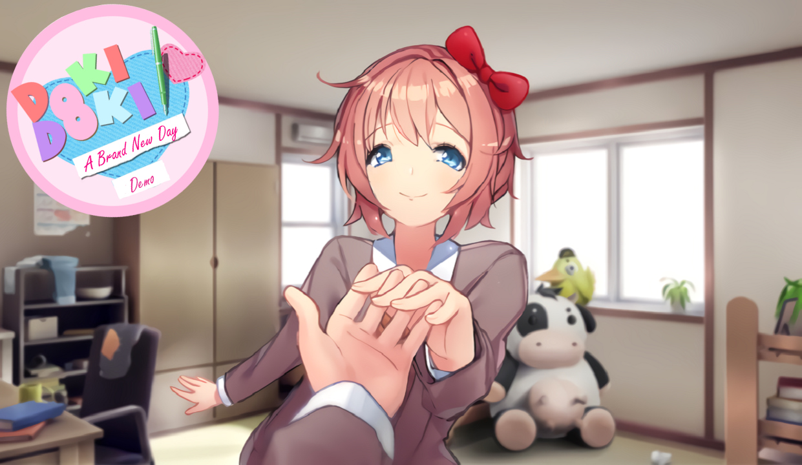

A Brand New Day
Sayori forçou nosso protagonista a se juntar ao Clube de Literatura. No entanto, ele continua sentindo aquela sensação de déjà vu. Ele logo descobre os problemas secretos das garotas e, como a pessoa prestativa que é, heroicamente as salva de quaisquer problemas que elas tenham. Eles são sempre gratos e ele ganha o carinho de todas as meninas! Isso não é tudo nesta história. Há algo ainda maior acontecendo nos bastidores que pode custar a vida deles! Será que ele conseguirá salvá-los de verdade? Descubra em um novo dia!
⬇ Download